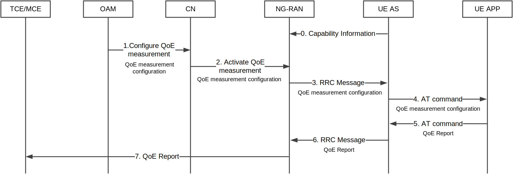
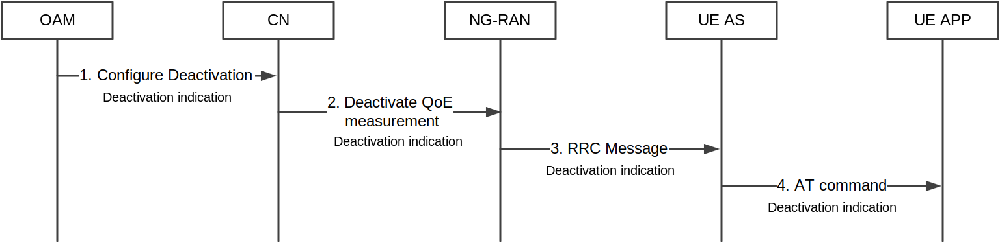
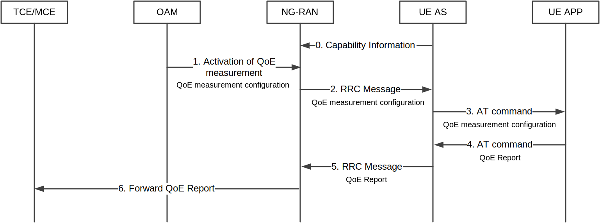
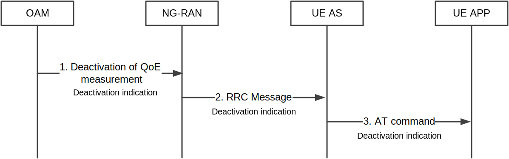
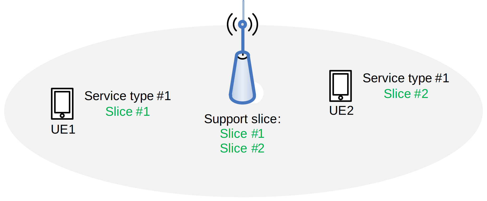

3GPP TR 38.890 V17.0.0 (2021-04)
Technical Report
3rd Generation Partnership Project;
Technical Specification Group Radio Access Network;
Study on NR QoE (Quality of Experience) management and optimizations for diverse services
(Release 17)
The present document has been developed within the 3rd
Generation Partnership Project (3GPP TM) and may be further
elaborated for the purposes of 3GPP.
The present document has not been subject to any approval process by the
3GPP Organizational Partners and shall not be implemented.
This Report is provided for future development work within 3GPP only.
The Organizational Partners accept no liability for any use of this
Specification.
Specifications and Reports for implementation of the 3GPP TM
system should be obtained via the 3GPP Organizational Partners’
Publications Offices.
3GPP
Postal address
3GPP support office address
650 Route des Lucioles – Sophia Antipolis
Valbonne – FRANCE
Tel.: +33 4 92 94 42 00 Fax: +33 4 93 65 47 16
Internet
Copyright Notification
No part may be reproduced except as authorized by written
permission.
The copyright and the foregoing restriction extend to reproduction in
all media.
© 2021, 3GPP Organizational Partners (ARIB, ATIS, CCSA, ETSI, TSDSI, TTA, TTC).
All rights reserved.
UMTS™ is a Trade Mark of ETSI registered for the benefit of its members
3GPP™ is a Trade Mark of ETSI registered for the benefit of its
Members and of the 3GPP Organizational Partners
LTE™ is a Trade Mark of ETSI registered for the benefit of its Members
and of the 3GPP Organizational Partners
GSM® and the GSM logo are registered and owned by the GSM Association
Keywords
<local positioning, NR>
Foreword 4
Introduction 4
1 Scope 5
2 References 5
3 Definitions, symbols and abbreviations 5
3.1 Definitions 5
3.2 Symbols 6
3.3 Abbreviations 6
4 General 6
5 5G services, QoE metrics and UE KPI information 7
6 Potential NR QoE solutions and procedures 7
6.1 Signalling-based procedures 7
6.1.1 Signalling-based activation procedure 7
6.1.2 Signalling-based deactivation procedure 8
6.2 Management-based procedures 8
6.2.1 Management-based activation procedure 8
6.2.2 Management-based deactivation procedure 9
6.3 QoE measurement triggering and stopping 10
6.4 Release of QoE measurement configuration 10
6.5 QoE measurement handling at RAN overload 10
6.6 Support for Mobility 10
6.7 RAN visible QoE information reporting by UE 12
6.7.1 General principles and message flow 12
6.7.2 Initial analysis on RAN visible QoE metrics 13
6.8 Radio-related measurements and information for QoE 14
6.9 Per-slice QoE measurement 15
6.9.1 Scenario and requirements 15
6.9.2 Solution 15
7 Potential Impacts on NR specifications 16
8 Conclusion 17
Annex A (informative): Change history 18
This Technical Report has been produced by the 3rd Generation Partnership Project (3GPP).
The contents of the present document are subject to continuing work within the TSG and may change following formal TSG approval. Should the TSG modify the contents of the present document, it will be re-released by the TSG with an identifying change of release date and an increase in version number as follows:
Version x.y.z
where:
x the first digit:
1 presented to TSG for information;
2 presented to TSG for approval;
3 or greater indicates TSG approved document under change control.
Y the second digit is incremented for all changes of substance, i.e. technical enhancements, corrections, updates, etc.
z the third digit is incremented when editorial only changes have been incorporated in the document.
A new SI “Study on NR QoE management and optimizations for diverse services” was approved for Release 17 at the 3GPP TSG RAN #86 meeting in [2]. The SI aims to study the potential RAN side solution for supporting a generic framework for triggering, configuring, collection and reporting of NR QoE measurement for various 5G use cases.
The present document captures the results of study on NR QoE management and optimizations for diverse services in RP-193256 [2]. It identifies to study the framework for triggering, configuring, collection and reporting of NR QoE measurement and study the potential impact on the related interface (e.g. F1, NG, Xn interface).
The following documents contain provisions which, through reference in this text, constitute provisions of the present document.
- References are either specific (identified by date of publication, edition number, version number, etc.) or non‑specific.
- For a specific reference, subsequent revisions do not apply.
- For a non-specific reference, the latest version applies. In the case of a reference to a 3GPP document (including a GSM document), a non-specific reference implicitly refers to the latest version of that document in the same Release as the present document.
[1] 3GPP TR 21.905: “Vocabulary for 3GPP Specifications”.
[2] 3GPP RP-193256: “New SID: Study on NR QoE management and optimizations for diverse services “.
[3] 3GPP TS 26.247: “Transparent end-to-end Packet-switched Streaming Service (PSS); Progressive Download and Dynamic Adaptive Streaming over HTTP (3GP-DASH)”.
[4] 3GPP TS 26.114: “IP Multimedia Subsystem (IMS); Multimedia Telephony; Media handling and interaction”.
[5] 3GPP TS 26.118: “Virtual Reality (VR) profiles for streaming applications”.
[6] 3GPP TS 26.346: “Multimedia Broadcast/Multicast Service (MBMS); Protocols and codecs”.
[7] 3GPP S5-205347: “LS on QoE Measurement Collection”.
[8] 3GPP S4-201576: “LS Reply on New service type of NR QoE”.
For the purposes of the present document, the terms and definitions given in 3GPP TR 21.905 [1] and the following apply. A term defined in the present document takes precedence over the definition of the same term, if any, in 3GPP TR 21.905 [1].
QoE measurement: An application layer measurement configured by OAM, see details in [3] [4] [5] [6] for different service types.
QoE report: The result of a QoE measurement.
Radio-related measurements: Measurements on the radio layer, whose purpose is to help network to further evaluate and improve the QoE.
Radio-related information: Information other than “radio-related measurements”, e.g. feature info, mobility history info or dual connectivity status.
RAN-visible QoE: Includes RAN-visible QoE metrics and RAN-visible QoE values.
RAN-visible QoE metrics: A subset of QoE metrics data collected from UE, which are useful for RAN.
RAN-visible QoE values: A set of values derived from QoE metrics data through a model/function defined in collaboration with SA4.
QoE measurement collection: Collection of QoE measurements in the UE.
QoE measurement collection activation: Initiation of a QoE measurement collection requested by OAM, associated with an identifier included in the QoE measurement configuration transmitted to the UE.
QoE measurement collection triggering: The condition(s) configured by OAM, whose fulfilment indicates to the UE that QoE measurement collection configured by OAM can be activated.
QoE measurement collection deactivation: Permanent stopping of a QoE measurement collection of identifiers (previously configured) requested from OAM transmitted to the UE, resulting in QoE measurement configuration release in the UE.
QoE measurement reporting: Delivery of the QoE report resulted from QoE measurement collection from the UE to the RAN.
QoE measurement reporting pause: An action resulting in temporary stopping of QoE measurement reporting, where the QoE measurement collection is not affected.
QoE measurement reporting resume: An action resulting in resumption of a previously paused QoE measurement reporting.
NOTE: The above definitions may need further adaptation, to align with SA5 and RAN2.
NOTE: The handling of RAN-visible measurement collection activation, triggering and deactivation, as well as RAN-visible QoE reporting pause and resume can be defined in normative phase.
For the purposes of the present document, the following symbols apply:
For the purposes of the present document, the abbreviations given in 3GPP TR 21.905 [1] and the following apply. An abbreviation defined in the present document takes precedence over the definition of the same abbreviation, if any, in 3GPP TR 21.905 [1].
LTE Long Term Evolution
MBS Multicast and Broadcast Service
MBMS Multimedia Broadcast and Multicast Service
MCE Measurement Collection Entity
MDT Minimization of Drive-Tests
MTSI Multimedia Telephony Service for IMS
NR NR Radio Access
QMC QoE Measurement Collection
QoE Quality of Experience
TCE Trace Collection Entity
UE User Equipment
URLLC Ultra-Reliable Low Latency Communication
VR Virtual Reality
XR Extended Reality
NR QoE takes LTE QoE solution as baseline, where LTE QoE solution includes the following key parts:
- Both signalling based and management based initiated cases are allowed.
- The LTE QoE feature is activated by Trace Function.
- Application layer measurement configuration received from OAM or CN can be encapsulated in a transparent container, which is forwarded to UE in a downlink RRC message. Application layer measurements received from UE’s higher layer can be encapsulated in a transparent container and sent to network in an uplink RRC message.
NR QoE supports the Application Layer Measurement Collection functionality.
This functionality enables the collection of application layer measurements from the UE. The supported service types include:
- Streaming services [3];
- MTSI services [4];
- VR [5];
- MBMS [6];
- XR.
Support for additional service types is not precluded.
In addition to the QoE metrics, the radio related measurements and information to assist the NR QoE management functionality are considered.
The procedure is used for activating the QoE measurement configured by OAM and triggered by CN shown in Figure 6.1.1-1.
The CN initiates the activation of the QoE measurement configured by OAM, and sends the QoE measurement configuration to the NG-RAN node. UE AS layer sends the QoE measurement configuration to UE application layer.
Configuration and Reporting for multiple simultaneous QoE measurements for a UE can be supported.
UE application layer generates the QoE report and sends it to the UE AS layer. UE AS layer sends the QoE report to NG-RAN node via a separate SRB (separate from current SRBs) in NR, as this reporting is lower priority than other SRB transmissions. Then the NG-RAN node transmits the QoE report to the final destination configured (e.g. TCE/MCE).
RRC segmentation may be needed for transmission of QoE reports, and any potential solutions need detailed technical specification of the procedures.
Management based QoE configuration should not override signalling based QoE configuration.

Figure 6.1.1-1 Signalling-based NR QoE activation procedure
The procedure is used for deactivating the QoE measurement configured by OAM and triggered by CN shown in Figure 6.1.2-1.
The CN initiates the deactivation of QoE measurement, as configured by OAM, and sends the deactivation indication to the NG-RAN node to indicate which QoE measurement should be deactivated. The NG-RAN node sends the deactivation indication to the UE AS layer, and then the UE AS layer sends the deactivation indication to the UE application layer.

Figure 6.1.2-1 Signalling-based NR QoE deactivation procedure
The procedure is used for activating the QoE measurement configured and triggered by OAM shown in Figure 6.2.1-1.
The OAM sends the QoE measurement configuration to NG-RAN node. NG-RAN finds multiple qualified Ues that meet the criteria (e.g. area scope, application layer capability, service type, etc.) or a single specific UE. NG-RAN node sends the QoE measurement configuration to the AS layer of the specific UE or each qualified UE. UE AS layer sends the QoE measurement configuration to UE application layer. When a session starts, the application layer in UE checks the criteria (e.g. cell list, service type, etc.), and, if the criteria are met, starts QoE measurement and reporting.
Configuration and Reporting for multiple simultaneous QoE measurements for a UE can be supported.
In case multiple QoE measurements are configured at a UE, it can be discussed in the normative phase whether one measurement is configured per service type at the UE.
UE application layer sends the QoE report to the UE AS layer. UE AS layer sends the QoE report to NG-RAN node via a separate SRB (separate from current SRBs) in NR, as this reporting is lower priority than other SRB transmissions. Then the NG-RAN node transmits the QoE report to the final destination configured (e.g. the MCE).
RRC segmentation may be needed for transmission of QoE reports, and any potential solutions need detailed technical specification of the procedures.
Management based QoE configuration should not override signalling based QoE configuration.
Regarding Management-based configuration towards an individual specific UE, the following needs to be considered:
The OAM is currently not capable of sending the QoE measurement configuration for a specific UE towards its serving gNB when the targeted UE becomes RRC_CONNECTED. This is because OAM is not informed about when a specific Ues served by a certain gNB become RRC_CONNECTED.
There is currently no UE identifier available in OAM which can be used to identify an UE connected to a certain gNB.
Although it is acknowledged that QoE measurement configuration towards an individual specific UE is already possible using signalling based configuration (via the CN), it should be noted that OAM can issue per-user policies for which the feedback in terms of user experience is required.

Figure 6.2.1-1 Management-based NR QoE activation procedure
The procedure is used for deactivating the QoE measurement triggered by OAM shown in Figure 6.2.2-1.
OAM sends the deactivation indication to NG-RAN node to indicate which QoE measurement should be deactivated.
If the NG-RAN node receives the indication that the QoE measurement configuration is to be deactivated, then NG-RAN node sends the deactivation indication to the UE AS layer, and the UE AS layer sends it to the application layer in UE.

Figure 6.2.2-1 Management-based NR QoE deactivation procedure
QoE measurement triggering and stopping can be realized using time-based and/or threshold-based criteria, configured by the OAM. Time-based QoE measurement triggering and stopping in NR is achieved by reusing mechanisms specified in LTE for the start and stop of QoE measurements. Threshold-based QoE measurement triggering and stopping allows to start and stop QoE measurement when given thresholds are passed.
Meanwhile, RAN is not allowed to intervene, i.e. pause, activate or de-activate an ongoing QoE measurement collection unless instructed otherwise by the OAM.
An NG-RAN node can issue a release of QoE measurement configuration for Ues previously configured for QoE measurement reporting, provided that the session for which the QoE measurements are reported is completed.
RAN may need to release an ongoing QoE measurement configuration or QoE reporting configuration, e.g. if handing over to a network that does not support this.
In case of RAN overload in standalone connectivity, RAN can stop new QoE measurement configurations, release existing QoE measurement configurations and pause QoE measurement reporting. RRC signaling is used by the gNB to indicate the UE to pause or resume the QoE reporting. Potential solutions of pause/resume mechanism need detailed technical specification of the procedures, e.g. pause/resume for all QoE reports or pause/resume per QoE configuration, how long can the UE store the reports, limit for stored reports size etc.
The details of QoE measurement handling at RAN overload in dual connectivity might be discussed in normative phase.
Seamless mobility is a key functionality in NR and its impacts should be measurable at the application layer. To enable measuring the impact of the mobility on the application and users’ QoE, it is required to support QoE measurement reporting continuity in intra-system intra-RAT intra-node and inter-node mobility scenarios: for intra-node mobility for both management-based and signalling-based QoE. At least signalling-based QoE supports this also in case of inter-node mobility. Support for management-based QoE will be discussed in normative phase, with respect to the “Requirements from SA WGs” below.
In LTE, to support the QoE measurement in mobility scenarios, the QoE configuration is forwarded from the source eNB to the target eNB inside the Trace Activation IE over the X2 interface. The same IE is sent over the S1 interfaces for mobility scenarios when the X2 interface is not established between the source and the target.
In NR, to support mobility for QoE measurements in RRC_CONNECTED state, the QoE measurement configuration transfer is supported on the Xn and NG interfaces, inside the Trace Activation IE as a part of UE Application Layer Measurement Configuration IE that may contain multiple QoE configurations for multiple service types. QoE measurements in RRC_IDLE and RRC_INACTIVE state can be supported for MBS. To support keeping QoE measurement configuration in RRC_INACTIVE state mobility, QoE measurement configuration for a UE can be fetched from the node hosting the UE Context. Whether UE stores its QoE configuration when going to RRC_INACTIVE state for potential use when the UE moves back to RRC_CONNECTED state will be decided in technical specification of the procedures.
In addition, the SA4 requirements for QoE measurements stipulate that the client shall check the QoE configuration only when a session starts (see “Requirements from SA WGs” below). This means that the client shall continue the QoE measurements for an ongoing session even if the UE moves out of the configured area. The SA4 requirements are RAT-independent and shall therefore be applied to the mobility solution for QoE measurement in NR, as well. QoE measurement reporting continuity in intra-system inter-RAT mobility scenarios should therefore be prioritized in Rel-17. QoE measurement reporting continuity in inter-system mobility scenarios may be handled in Rel-18. Appropriate action for the case where the target RAT does not support the source RAT configurations (including QoE configuration) is to be defined in normative phase in coordination with RAN2. Other issues requiring clarification in normative phase include how the area scope is configured to cover inter-RAT mobility, how service continuity is dealt together with QoE measurements for intra-RAT inter-node mobility, how the target RAT/system knows if the source side has configured the QoE measurement for the concerned UE.
For support of MR-DC, a selection between one or more of the following alternatives may be done in normative phase:
- Alternative 1: No support – only the MN can configure QoE in the UE, and QoE measurement reports are sent from the UE to the MN.
- Alternative 2: Flexible QoE configuration, i.e. may be done by either the MN or the SN.
- Alternative 3: Flexible QoE measurement reporting, i.e. may be done via either the MN leg or the SN leg (e.g. depending on load situation or on a need basis).
Alternatives 2 and 3 may be combined.
One example use case for MR-DC QoE support is that, for a DC-capable UE, the RAN may want to determine whether to set up the DC for this UE or not. For instance, if QoE performance with only one leg set up is sufficiently good, then setting up the other leg may be unnecessary, i.e. it would unnecessarily drain the UE’s battery.
Requirements from SA WGs:
LS [7] from SA5 states “It is essential that handover is supported for QoE measurements”, and refers to:
- TS 28.404 REQ-EUSPC-CON-1: The operator shall have a capability to request collection of QoE information per end user service/end user service type for a specified area. The request may include an address of a collection centre to which the collected information shall be delivered.
- TS 26.114 clause 16.3, TS 26.247 clause 10.5 LocationFilter: “When present, this element indicates the geographic area(s) or location(s) where quality metric collection is requested.”
- TS 26.114 clause 10.1, TS 26.247 clause 16.3: “The QoE configuration shall only be checked by the client when each session starts, and thus all logging and reporting criterias for an ongoing session shall be unaffected by any QoE configuration changes received during that session. This also includes evaluation of any filtering criterias, such as geographical filtering, which shall only be done when the session starts. Thus changes to the QoE configuration will only affect sessions started after these configuration changes have been received.”
At the time of this study, SA4 has only specified QMC functionality (for QoE configuration and reporting) for UMTS and LTE [8].
Other references that need to be considered for RAN3’s work:
- TS 26.114 clause 16.5.1: “The QoE configuration AT command +CAPPLEVMC may also indicate with an Within-area Indication if the UE is inside or outside a wanted geographic area. Such an indication may arrive with or without any QoE configuration container attached. If the MTSI client is informed that it is not inside the area, it shall not start any new QoE measurements even if it has received a valid QoE configuration container, but shall continue measuring for already started sessions.” The same behaviour is described for the DASH client in TS 26.247 annex L.
- TS 26.114 clause 16.5.2 XML configuration: “Note that if geographical filtering is handled on the network side (i.e. QoE reporting is turned on/off by the network depending on the UE location), no LocationFilter should be specified in the QoE Configuration, as this would mean two consecutive filterings.”
To fulfil the SA4 and SA5 QoE requirements of mobility, the details of Area Handling at mobility shall be addressed in the WI. For the Area Handling at mobility there are three main options, as follows:
- Option 1, where the network is responsible for keeping track of whether the UE is inside or outside the area and configures / releases configuration accordingly.
- Option 2, where the network is responsible for keeping track of whether the UE is inside or outside the area, and the UE responsible to manage start/stop of QoE accordingly.
- Option 3, where the UE is responsible for area checking (UE has the area configuration) and to manage start/stop of QoE accordingly.
The mobility procedure adaptation for signalling-based vs. management-based shall be addressed in the WI.
The RAN may not be able to understand or make use of the legacy QoE metrics, as they are assembled by the OAM, sent inside containers and intended to be processed by the Measurement Collection Entity in the network. If the RAN needs to make use of the QoE concept, there might be requirements that QoE information should be visible by the RAN. RAN-visible QoE information is simplified QoE information abstracted from QoE metrics by UE, which the RAN may use for various types of optimizations.
The RAN-visible QoE metrics can be derived from individual SA4-defined QoE metrics deemed useful for the RAN, such as buffer level. RAN-visible QoE metrics may be e.g. be simplified values derived from individual useful SA4-defined QoE metrics or combinations of these values. SA4 to be consulted on how the values are derived.
The following holds:
- The RAN-visible QoE can be used for all services.
- The RAN is responsible for assembling the RAN-visible QoE measurement configuration.
- The RAN is responsible for triggering i.e. activating the RAN-visible QoE measurement.
- Whether the RAN can explicitly ask the UE to report certain RAN-visible QoE metrics, or just an indication to report the fixed set of RAN-visible QoE metrics predefined per service type, is to be studied in the normative phase.
- The RAN should be able to configure RAN-visible QoE autonomously for a given service type only if the application layer QoE for the same service type is already configured.
- The RAN-visible QoE value can be generated by UE and QoE server.
NOTE: RAN generating RAN-visible QoE values requires that RAN reads the QoE report in XML format, which is left to implementation.
- The RAN-visible QoE values are delivered to the RAN as a separate IE, visible to the RAN.
- The RAN is not allowed to change the existing configuration of legacy QoE metrics specified by SA4.
Figure 6.7.1-1 shows the message flow for RAN-visible QoE information reporting.
Figure 6.7.1-1: RAN-visible QoE information reporting
1. An NG-RAN node assembles and sends the RAN-visible QoE configuration to a UE, which may be sent along with the QoE measurement configuration container transmitted from the OAM, directly or via the CN.
2. The UE receives and applies the RAN-visible QoE configuration and/or QoE measurement configuration container. The RAN-visible QoE configuration may be so that the corresponding RAN-visible QoE information that is reported can be a unique value or a combination of values reflecting the QoE metrics useful for RAN (such as buffer level). The RAN-visible report is provided from the application layer of the UE to the UE’s RRC layer by means of an AT command. The UE’s RRC layer then includes the RAN-visible report, along with the QoE report container, but as a separate IE, in the MeasReportAppLayer IE, and sends it to the RAN.
3. The NG-RAN node reads the RAN-visible QoE information and/or forwards the (legacy) QoE report container to the QoE server accordingly. Alternatively, the OAM server may generate the RAN-visible QoE report and send it to the RAN.
The table below takes the QoE metrics for streaming service as an example and provides an initial analysis of potential benefits to RAN. In general, whether any metric is beneficial for RAN when it is visible to RAN, should be studied per metric in the normative phase.
Table 6.7.2-1: Initial analysis on QoE Report visibility at RAN for streaming service
| Metric | Description | Initial analysis |
|---|---|---|
| Round-trip time | If Round-trip time is large, RAN could try to compensate based on RAN part delay, but the cost might be significant. RTT is also related with many factors like UE capability, radio quality, radio load, etc., to adjust radio transmission delay for one user may impact other users, and the effect for the whole system performance is unpredictable. | |
| Jitter duration | There are other factors affecting jitter, e.g. buffer size available at UE side, processing delay etc., if RAN already fulfil QoS requirement, and Jitter duration is still bad, further analysis are needed to see whether and what RAN could do to improve. | |
| Corruption duration | The time period from the NPT time of the last good frame (since the NPT time for the first corrupted frame cannot always be determined) before the corruption, to the NPT time of the first subsequent good frame | If the RAN can know the results of this metric, the RAN can adjust the resource allocation of the UE to satisfy the user experience |
| Average Throughput | RAN could measure RAN side throughput by itself and make adjustment accordingly, so this metric has some relation with RAN, though the benefit seems unclear. | |
| Initial playout delay | From the fetch of the first media Segment (or sub-segment) and the time at which media is retrieved from the client buffer | |
| Device information… | A list of device information objects | This metric may have potential privacy issues because it exposes the user information. However, the videoWidth videoHeight in Device information may reflect the UE expectations of QoE, it is possible that RAN schedule the UE first with higher QoE expectation. |
| Rendered viewports | A list of viewports that have been rendered during the media presentation | This metric may have potential privacy issues because it exposes the user behaviour |
| Codec Information | ||
| Buffer level | A list of buffer occupancy level measurements during playout at normal speed. | If the RAN can know the results of buffer level, the RAN can adjust the resource allocation of the UE to ensure there is enough buffer for the streaming, this might help to improve the scheduling efficiency. |
| Representation switch events | To record switch events during playout | This metric is also related with user behaviour during playout |
| Play List | A list of playback periods. A playback period is the time interval between a user action and whichever occurs soonest of the next user action, the end of playback or a failure that stops playback | This metric records the user action of playback during playout. The playlist may be used to derive many other metrics, and an example calculation of a few stalling-related metrics The initial stalling, the frequency of stalling, and the stalling duration may reflect UE experience, it is possible that RAN schedule the UE first with bad UE experience to prevent further QoE degradation. |
| MPD (Media presentation description) Information | This metric can be used to report Representation information from the MPD, so that reporting servers without direct access to the MPD can understand the used media characteristics | Not sure if there are any additional benefits if RAN understands the used media characteristics, anyway RAN should first to behave according to the received QoS parameters which actually reflect media characteristics. |
| Interactivity Summary: | Summarizes the measurements of interactivity usage according to different metrics such as user consumption of rendered interactivity content or engagement with user interface (UI) functionality, such as viewing, clicking on or selection of hyperlinks, radio buttons, check boxes and other forms of UI displays or controls. | This seems also to be related with user behaviour during playout period. |
| Interactivity Event List | A time-ordered list of interactivity events occurring during the playout of the main program, each containing detailed information on the incidences of interactivity usage during that event, as covered by an instance of the interactivity usage report. | Similar as above |
In order for the network to further evaluate and improve the QoE, the RAN could also trigger radio-related measurements towards a certain UE, based on the QoE measurement configuration received from the OAM. For triggering the measurements, an existing mechanism, e.g. MDT procedure, can be used. Collection of radio related measurements, if needed, should be done by existing methods such as MDT, if the UE supports MDT in R17.
The radio-related QoE measurements are reported for all types of supported services, and they include MDT-like measurements and, potentially, additional measurements related to the radio interface. If new radio-related measurements, with respect to what is currently specified in MDT, are required for NR QoE management, these additional radio-related QoE measurements will be specified as a part of MDT measurements. Application-related QoE measurements are only collected when the application session is ongoing. If these radio-related measurements are used for assisting application-related QoE measurements, it is beneficial and efficient if measurement collection and reporting can start at the same time. If configured together e.g. using same trace reference and time aligned, e.g. based on time stamps, correlation of the results may be done by post processing. Besides radio-related measurement results, radio-related information may also be reported. Radio-related information may be reported even when radio-related measurements are not triggered over the radio.
Both of the radio-related measurement results and radio-related information, if reported, should be aligned and correlated with the QoE report, using e.g. trace ID.

Figure 6.9.1-1: An example of the same service type served by different slices
Figure 6.9.1-1 is an example of the same service type served by different slices. As shown in the figure, UE1 is served by Slice #1 and UE 2 is served by Slice #2. If the Service Level Agreement (SLA) of Slice #1 and Slice #2 are different, QoE of UE1 and UE2 may be different for the same service type.
Below are scenarios (included, but not limited) identified for per slice QoE measurement collection for further analysis in normative phase:
Table 6.9.1-1: Per-slice QoE measurement scenarios
| Scenario 1 | Different service types uses different slices | service type 1 –slice 1 service type 2 –slice 2 |
| Scenario 2 | Different service types uses the same slice | service type 1 –slice 1 service type 2 –slice 1 |
| Scenario 3 | The same service type using different slice | service type 1 –slice 1 service type 1 –slice 2 |
Solution 1
Example of sequence or steps of the solution are listed below:
1. The OAM/CN transmits the QoE measurement configuration to the NG-RAN node, including Slice Scope (list of S-NSSAIs).
2. The NG-RAN node can map the Slice Scope to the ongoing PDU session list and send the QoE measurement configuration with the PDU session list to the UE.
3. The UE receives the QoE measurement configuration and sends it to the corresponding application layer according to the PDU session list.
4. The UE sends the QoE report with PDU session ID to NG-RAN node.
5. The NG-RAN node can remap the PDU session ID back to slice ID (S-NSSAI) and attach it in the QoE report.
6. The NG-RAN node forwards the QoE report with slice ID to the MCE.
Solution 2
Example of sequence or steps of the solution are listed below:
1. The OAM/CN transmits the QoE measurement configuration to the NG-RAN node, including Slice Scope.
2. The NG-RAN node checks the Slice Scope with all of the ongoing PDU sessions and sends QoE measurement configuration to a UE with qualified PDU session, including Slice Scope.
3. The UE receives the QoE measurement configuration and sends it to the corresponding application layer according to the Slice Scope. Whether Application layer or AS layer performs the mapping can be discussed at normative stage.
4. The UE sends the QoE report with slice ID to the NG-RAN node.
5. The NG-RAN node forwards the QoE report with slice ID to the MCE.
For solution 2, Slice Scope may be inside of the QoE configuration container defined by SA4 and further confirmation with SA4 is needed.
For the case of same service type with different slice ID, detailed solution might need confirmation from other working groups.
Solution 3
Example of sequence or steps of the solution are listed below:
1. The OAM/CN transmits the QoE measurement configuration to the NG-RAN node, including the associated slice ID, outside the QoE configuration container, i.e. visible to the RAN.
2. The NG-RAN node checks the slice ID against the ongoing PDU sessions, and sends QoE measurement configuration to a UE with qualified PDU session, including slice ID.
3. The UE receives the QoE measurement configuration and performs QoE measurements.
4. The UE sends the QoE report to the NG-RAN node and adds the slice ID outside the QoE report container.
5. The NG-RAN node forwards the QoE report with slice ID to the MCE.
6. For the case of same service type with different slice ID, detailed solution might need confirmation from other working groups
For all above solutions, Slice Scope is outside of the QoE configuration container, which defined by SA4, and also needs confirmation with SA5. Slice Scope is applied for all configured Area scope.
For signalling-based QoE, Slice Scope (e.g. list of S-NSSAIs) should be transmitted to the target gNB during mobility.
For management-based QoE, Slice Scope can be clarified in normative stage.
The details of all solutions will be discussed in the normative phase.
For Per slice QoE measurement, the key impacts of the solutions can be found in the Table 7-1 below:
Table 7-1: Key impacts of the solutions
Criteria Solution |
RAN impact | Core impact | OAM impact | UE impact | SA4 impact |
| Solution 1 | Introduce slice info in message. Slice Scope check. The RAN has to perform post-processing (translate PDU session ID into slice ID) for each QoE measurement report. |
N/A | Slice info outside QoE configuration file. | NAS/AS layer | N/A |
| Solution 2 | Introduce slice info in message. Slice Scope check |
N/A | Slice info outside and may inside the QoE configuration file | AS layer or Application layer | Can be evaluated in normative stage, e.g. slice info inside QoE configuration file and QoE report |
| Solution 3 | Introduce slice info in RRC message. Slice ID check before configuring UE for measurement Slice ID check at reception of QoE report |
N/A | Slice info outside the QoE configuration and report file | AS layer | N/A |
Potential impacts on RAN2 specifications.
- RRC signalling definition for QoE configuration and reporting, including aspects related to SRBs and multiple QoE configurations
- RRC signalling definition for RAN overload handling, e.g. pause/resume/release procedures
- RRC impact related to mobility handling for signalling-based and management-based QoE
- RRC signalling and procedures for handling QoE measurements in RRC_IDLE/ RRC_INACTIVE state
- RRC signalling and procedure definition for RAN-visible QoE configuration and reporting (the specification impact depends on the exact solution)
The following features are recommended by RAN3 to be specified in Rel-17 normative phase:
- Signalling-based activation/deactivation
- Management-based activation/deactivation
- QoE measurement handling at RAN overload
- Multiple QMC support
- QoE continuity for intra-RAT mobility
- QoE measurement in RRC_INACTIVE
- RAN visible QoE
- Per-slice QoE measurement
- Alignment of MDT and QoE measurements
The following features are recommended by RAN3 to be deprioritized in Rel-17 normative phase:
- QoE continuity for Inter-system mobility
- QoE measurement in RRC_IDLE
- QoE continuity for Inter-RAT mobility
- QoE support for MR-DC
| Change history | |||||||
| Date | Meeting | Tdoc | CR | Rev | Cat | Subject/Comment | New version |
| 2020.08 | RAN3 109-e | R3-205723 | - | - | - | TR skeleton | 0.0.0 |
| 2020.08 | RAN3 109-e | R3-205725 | - | - | - | Introduction of supported service types | 0.1.0 |
| 2020.11 | RAN3 110-e | R3-207185 | - | - | - | RAN visible QoE information reporting by UE | 0.2.0 |
| 2020.11 | RAN3 110-e | R3-207186 | - | - | - | radio related measurements and information | 0.2.0 |
| 2020.11 | RAN3 110-e | R3-207187 | - | - | - | QoE measurement triggering, reporting and releasing | 0.2.0 |
| 2020.11 | RAN3 110-e | R3-207192 | - | - | - | Per slice QoE measurement for NR QoE | 0.2.0 |
| 2020.11 | RAN3 110-e | R3-207213 | - | - | - | Signalling-based signalling for NR QoE | 0.2.0 |
| 2020.11 | RAN3 110-e | R3-207225 | - | - | - | Management based signalling for NR QoE | 0.2.0 |
| 2020.11 | RAN3 110-e | R3-207217 | - | - | - | Mobility Support for NR QoE | 0.2.0 |
| 2021.02 | RAN3 111-e | R3-211356 | - | - | - | Agreements on mobility | 0.3.0 |
| 2021.02 | RAN3 111-e | R3-211357 | - | - | - | Introduction of essential definitions | 0.3.0 |
| 2021.02 | RAN3 111-e | R3-211339 | - | - | - | Clean-up of mismatching | 0.3.0 |
| 2021.02 | RAN3 111-e | R3-211358 | - | - | - | Agreements on configuration and reporting | 0.3.0 |
| 2021.02 | RAN3 111-e | R3-211341 | - | - | - | Agreements on per slice QoE measurement | 0.3.0 |
| 2021.02 | RAN3 111-e | R3-211342 | - | - | - | Agreements on QoE visibility at the RAN | 0.3.0 |
| 2021.02 | RAN3 111-e | R3-211343 | - | - | - | QoE feature ranking | 0.3.0 |
| 2021.02 | RAN2 113-e | R2-2102483 | - | - | - | Miscellaneous TR update (RAN2) | 0.3.0 |
| 2021.03 | RAN 91-e | RP-210724 | - | - | - | Provided for approval to RAN | 1.0.0 |
| 2021.03 | RAN 91-e | - | - | - | Update to Rel-17 version (MCC) | 17.0.0 | |